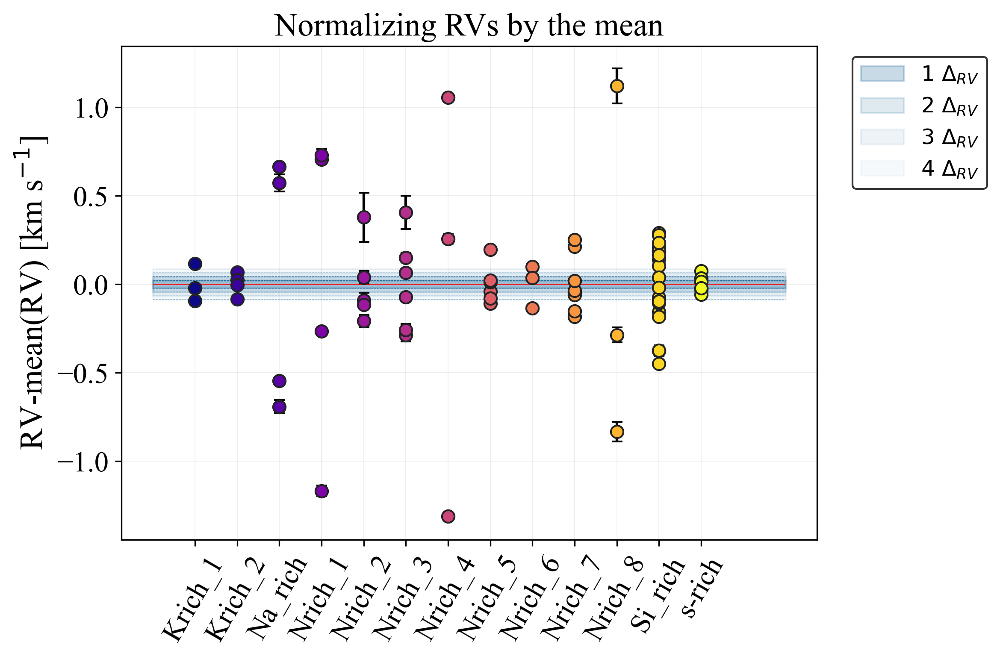
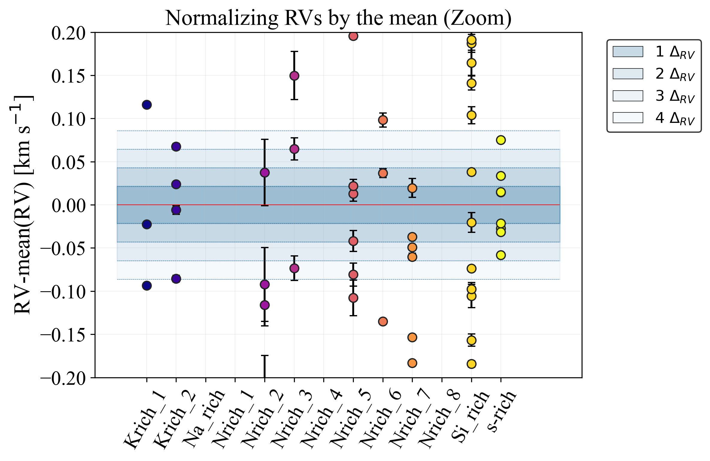

Classification of the stars
| Star |
>0.2 km/s |
0.1 - 0.2 km/s |
<0.1 km/s |
Tag |
| K-rich 1 | 0 | 2 | 1 | Probable |
| K-rich 2 | 0 | 0 | 4 | Unknown |
| Na-rich | 4 | 0 | 0 | Variable |
| N-rich 1 | 4 | 0 | 0 | Variable |
| N-rich 2 | 2 | 2 | 1 | Variable |
| N-rich 3 | 3 | 1 | 2 | Variable |
| N-rich 4 | 3 | 0 | 0 | Variable |
| N-rich 5 | 0 | 2 | 4 | Probable |
| N-rich 6 | 0 | 2 | 1 | Probable |
| N-rich 7 | 2 | 2 | 4 | Variable |
| N-rich 8 | 3 | 0 | 0 | Variable |
| Si-rich | 7 | 9 | 3 | Variable |
| s-rich | 0 | 0 | 8 | Unknown |
Variación de la VR

Estrella
